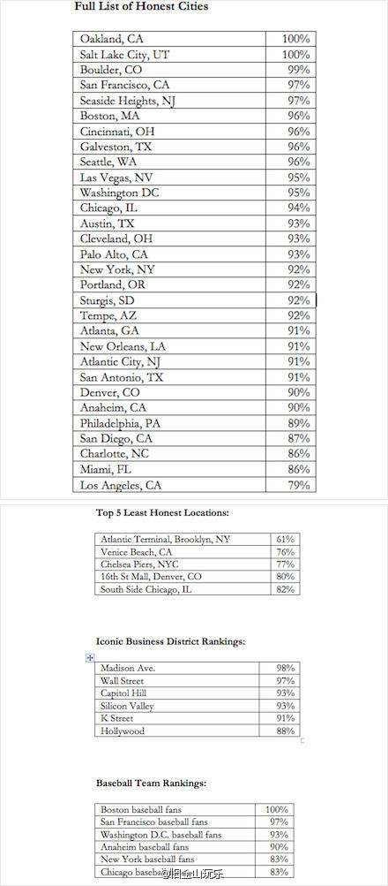

秦晖说做清史明史研究的只要努力，总能在浩瀚的文字中做点东西出来。感觉西方历史过去三四百年的历史也一样，特别是社会史。中国写明清历史的，通篇都是引路人甲乙丙丁的笔记小说；西方历史写过去三四百年的，则通篇都是引用汤姆杰瑞之类的回忆录、私人书信、小说。像在茫茫沙滩上挑出一串整齐的贝壳。

斯图亚特9
2013-03-03
斯图亚特9
2013-03-03
Oakland... 黑帮枪战之余拿起饮料喝几口还要记得投1块钱的. //@Zhenbin_Luo: 赞redsox fans
@旧金山玩乐:
美国人到底有多诚实？有一家叫“诚实的茶亭（Honest Tea)”的公司在全美各城摆置了许多自动取饮料但无人看摊的茶亭，只有文字告示要人取完饮料后放一块钱再走。结果全美平均93%（男人91%，女人95%）的人诚实的放进了一块钱。最好的城市#加州Oakland#达到100%，你吃惊么？  网页链接
网页链接
- 